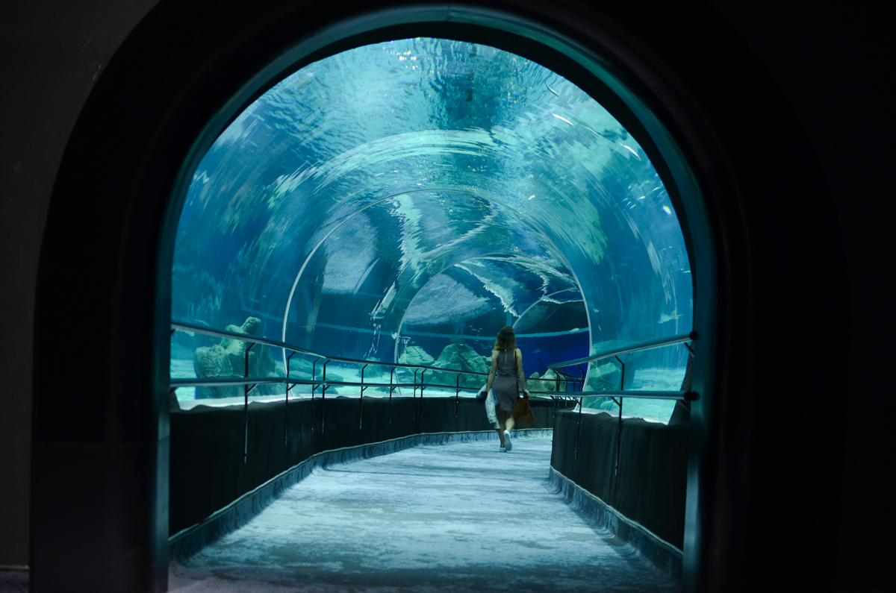

Aquario Marinho
Localizado na vibrante cidade do Rio de Janeiro, o AquaRio é uma atração imperdível para os amantes do mundo marinho.
Com uma infraestrutura moderna e uma variedade impressionante de espécies aquáticas,
o AquaRio é o maior aquário marinho da América do Sul e promete proporcionar uma experiência única e fascinante.
- peixe-cirurgião
- garoupa
- peixe-leão
- tubarão galha branca de recife
- tubarão-gato
- tubarão-bambu

Voltar